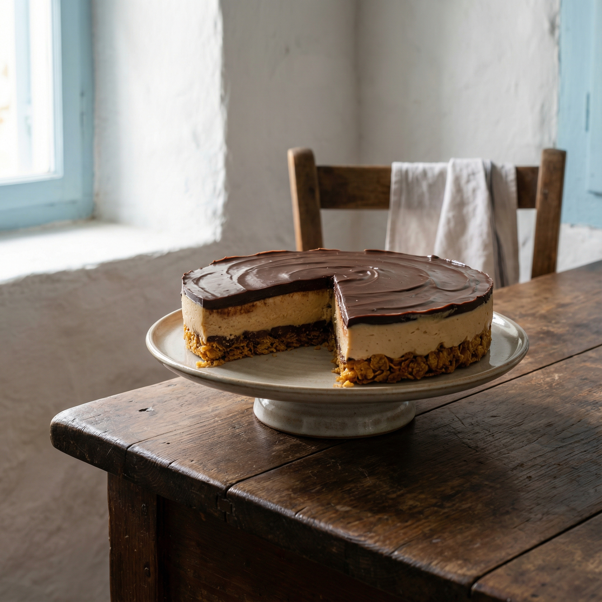
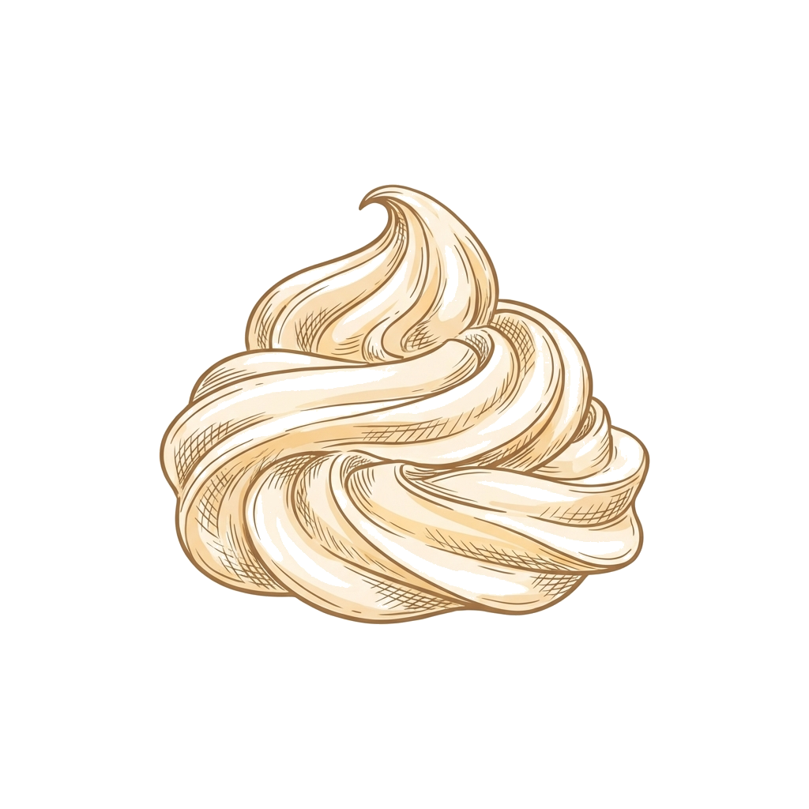
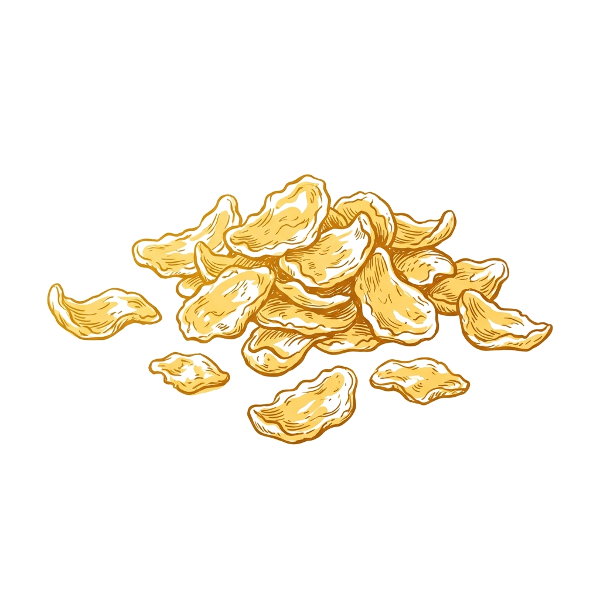
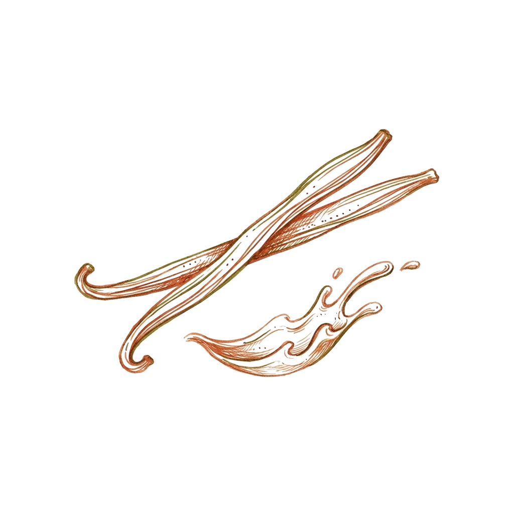
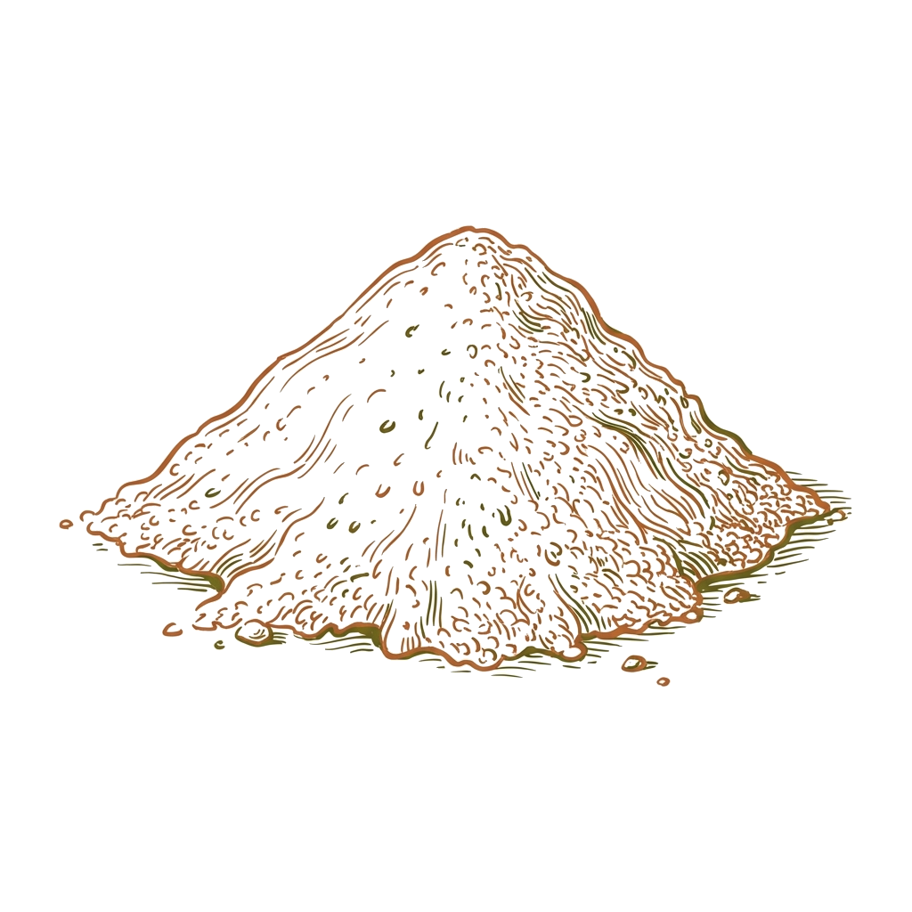

השם 'עוגת נוגט ובוטנים' מתאר היטב את הקינוח הישראלי המודרני הזה. גרסה טבעונית זו שומרת על טעם הסניקרס האהוב עם בסיס קורנפלקס פריך וקרם בוטנים עשיר. היא מציעה קינוח עשיר ללא מוצרי חלב, מושלם לשבת או לכל אירוע חגיגי.
Ugat Nougat v'Botnim combina los términos en hebreo para tarta, nougat y maní, describiendo este moderno postre israelí. Esta versión vegana mantiene el popular perfil de sabor a Snickers con una base crujiente de hojuelas de maíz y una rica crema de maní. Ofrece un postre decadente y sin lácteos, perfecto para Shabat o cualquier celebración.
أوڨات نوقات فبوتنيم (Ugat Nougat v'Botnim) تجمع كلمات عبرية للكيك والنوقا والكاكاوية باش توصف هالحلو الإسرائيلي العصري. هالنسخة النباتية تحافظ على مطعم السنيكرز البنين مع قاعدة مقرمشة متاع كورن فليكس وكريمة كاكاوية غنية. تعطي بنة هايلة من غير حليب، وتصلح برشا لنهار السبت ولا لأي لمة احتفالية.
Ugat Nougat v'Botnim combines Hebrew terms for cake, nougat, and peanuts to describe this modern Israeli treat. This vegan version maintains the beloved Snickers-like profile with a crunchy cornflake base and rich peanut cream. It offers a decadent dairy-free finish perfect for Shabbat or any festive gathering.






- 200 g de crema de nougat de avellana vegana
- 48 g de mantequilla de maní, suave
- 150 g de hojuelas de maíz (cornflakes), trituradas
- 200 g de chocolate oscuro
- 25 g de aceite de coco
- 250 ml de crema para batir de origen vegetal
- 240 ml de leche de soya o almendras
- 1 paquete de mezcla para pudín de vainilla instantáneo
- 48 g de mantequilla de maní
- 200 g de chocolate oscuro
- 250 ml de crema para batir de origen vegetal
- Perlas de chocolate oscuro vegano, al gusto
- 1.Tritura las hojuelas de maíz en un tazón grande. Añade la crema de nougat y la primera porción de mantequilla de maní.
- 2.Derrite la primera porción de chocolate oscuro con el aceite de coco en una olla pequeña o en el microondas. Vierte esta mezcla sobre las hojuelas de maíz y revuelve hasta integrar bien.
- 3.Presiona la mezcla de manera uniforme en el fondo de un molde redondo de 24 cm (preferiblemente desmontable). Lleva al congelador durante al menos 10 minutos para que se endurezca.
- 4.En una batidora, bate la crema vegetal, la leche de soya o almendras, el pudín instantáneo y la segunda porción de mantequilla de maní hasta obtener una crema firme.
- 5.Una vez que la base esté firme, extiende la crema uniformemente sobre ella. Regresa al congelador por al menos 3 horas.
- 6.Prepara la cobertura: Derrite el resto del chocolate oscuro con el resto de la crema vegetal en una olla o en el microondas, revolviendo hasta obtener un ganache suave.
- 7.Vierte el ganache de chocolate sobre la capa de crema congelada. Decora con perlas de chocolate si lo deseas.
- 200 גרם ממרח נוגט-לוז טבעוני
- 48 גרם חמאת בוטנים חלקה
- 150 גרם קורנפלקס, מפורר
- 200 גרם שוקולד מריר
- 25 גרם שמן קוקוס
- 250 מ"ל שמנת צמחית להקצפה
- 240 מ"ל חלב סויה או שקדים
- 1 חבילה אינסטנט פודינג וניל
- 48 גרם חמאת בוטנים
- 200 גרם שוקולד מריר
- 250 מ"ל שמנת צמחית להקצפה
- פניני שוקולד מריר טבעוני, לקישוט
- 1.מפוררים את הקורנפלקס לקערה. מוסיפים את ממרח הנוגט ואת הכמות הראשונה של חמאת הבוטנים.
- 2.ממיסים את הכמות הראשונה של השוקולד המריר עם שמן הקוקוס בסיר קטן או במיקרוגל. יוצקים את התערובת על הקורנפלקס והממרחים, ומערבבים היטב לתערובת אחידה.
- 3.מהדקים את התערובת באופן שווה לתחתית תבנית עגולה בקוטר 24 ס"מ (מומלצת תבנית קפיצית). מעבירים למקפיא ל-10 דקות לפחות להתייצבות.
- 4.בקערת מיקסר, מקציפים את השמנת הצמחית, החלב הצמחי, אבקת הפודינג ואת הכמות השנייה של חמאת הבוטנים עד לקבלת קרם יציב.
- 5.כשהבסיס יציב, מורחים עליו את הקרם בשכבה אחידה. מחזירים למקפיא ל-3 שעות לפחות.
- 6.להכנת הציפוי: ממיסים את יתרת השוקולד המריר עם יתרת השמנת הצמחית בסיר קטן או במיקרוגל, עד לקבלת גנאש חלק.
- 7.יוצקים את ציפוי השוקולד על שכבת הקרם הקפואה. מקשטים בפניני שוקולד, אם רוצים.
- 3/4 cup vegan hazelnut nougat spread
- 3 tbsp smooth peanut butter
- 5 cups cornflakes, crushed
- 1 1/4 cups dark chocolate
- 2 tbsp coconut oil
- 1 cup plant-based whipping cream
- 1 cup soy or almond milk
- 1 package (3.4 oz) instant vanilla pudding mix
- 3 tbsp peanut butter
- 1 1/4 cups dark chocolate
- 1 cup plant-based whipping cream
- Vegan dark chocolate pearls, for garnish
- 1.Crush the cornflakes into a mixing bowl. Add the nougat spread and the first portion of peanut butter.
- 2.Melt the first portion of dark chocolate with the coconut oil in a small saucepan or microwave. Pour over the cornflake mixture and stir until well combined.
- 3.Press the mixture evenly into the bottom of a 9-inch (24 cm) round springform pan. Place in the freezer for at least 10 minutes to set.
- 4.In a stand mixer, whip the plant-based cream, soy or almond milk, instant pudding mix, and the remaining 3 tablespoons of peanut butter until stiff peaks form.
- 5.Once the base is firm, spread the peanut butter cream evenly over it. Return to the freezer for at least 3 hours.
- 6.Prepare the ganache topping: Melt the remaining dark chocolate with the remaining plant-based cream in a saucepan or microwave, stirring until smooth.
- 7.Pour the chocolate ganache over the frozen cream layer. Garnish with chocolate pearls, if desired.
- كاس غير ربع كريمة نوقا نباتية
- 3 مغارف كبار زبدة كاكاوية
- 5 كيسان كورن فليكس، مهروش
- كاس وربع شكلاطة كحلة
- 2 مغارف كبار زيت كوكو (جوز الهند)
- كاس كريمة سائلة نباتية للركضان
- كاس حليب صوجا ولا لوز
- باكو بودينغ فانيليا (إينستانت)
- 3 مغارف كبار زبدة كاكاوية
- كاس وربع شكلاطة كحلة
- كاس كريمة سائلة نباتية للركضان
- كعبات شكلاطة كحلة نباتية للزينة (حسب الذوق)
- 1.هروش الكورن فليكس في صحفة كبيرة. زيد عليه كريمة النوقا والكمية الأولى متاع زبدة الكاكاوية.
- 2.ذوّب الكمية الأولى متاع الشكلاطة الكحلة مع زيت الكوكو في كسرونة صغيرة ولا في الميكروويف. صب الخليط فوق الكورن فليكس، وخلط مليح لين يتجانسو.
- 3.رص الخليط بالباهي في قاع طبق مدور 24 سم (من المستحسن طبق يتحل). حطه في الكونجيلاتور 10 دقايق عالأقل باش يشد روحه.
- 4.في ركاضة، ركض الكريمة السائلة النباتية، الحليب النباتي، غبرة البودينغ والكمية الثانية متاع زبدة الكاكاوية لين تطلع وتولي كريمة شادة روحها.
- 5.كيف ييبس الباز ويشد روحه، افرش الكريمة بالتساوي من فوق. رجع الطبق للكونجيلاتور 3 سوايع عالأقل.
- 6.حضّر القناش (التغليفة): ذوّب الشكلاطة الكحلة اللي بقات مع الكريمة النباتية اللي بقات في كسرونة ولا في الميكروويف، وحرك لين تولي رطبة وتلمع.
- 7.صب قناش الشكلاطة فوق طبقة الكريمة المكونجلية. زيّن بكعبات الشكلاطة كان تحب.